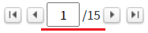
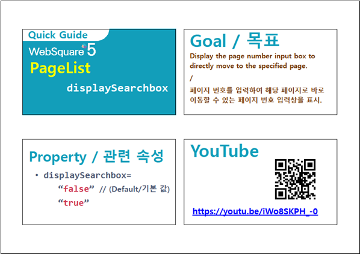

[PageList] 페이지 입력 필드 표시하기
1개요
속성 'displaySearchbox' 설정 비교 예제입니다. 이 속성을 통해 페이지 입력 필드의 표시 여부를 지정할 수 있습니다.
설정 값에 따른 동작은 다음과 같습니다.
"false": [default] 페이지 입력 필드를 표시하지 않습니다.
"true": 페이지 입력 필드를 표시합니다.
페이지 입력 필드의 값은 함수 'getSelectedIndex'와 이벤트 'oninputblur'를 통해 확인할 수 있습니다.
2구현된 기능
페이지 입력 필드 표시하지 않기
페이지 입력 필드 표시하기
3예제 테스트 방법
3.1페이지 입력 필드 표시하지 않기
STEP 1. 실행된 결과를 확인합니다.
예제 영역 [(기본 설정) 페이지 입력 필드 표시하지 않기]의 'PageList'를 확인합니다.
화면에 버튼과 페이지 수로 구성됩니다.그림 1.브라우저(Chrome) 실행 예시

3.2페이지 입력 필드 표시하기
STEP 1. 실행된 결과를 확인합니다.
예제 영역 [페이지 입력 필드 표시하기]의 'PageList'를 확인합니다.
화면에 버튼과 페이지 입력 필드, 총 페이지 수 문자열로 구성됩니다.그림 2.브라우저(Chrome) 실행 예시

4구현 예시
4.1속성으로 페이지 입력 필드의 사용 여부 설정하기
속성을 정의합니다.
[필수] displaySearchbox="설정 값"
(설정 값)
- "false": [default] 페이지 입력 필드를 표시하지 않습니다.
- "true": 페이지 입력 필드를 표시합니다.
예시) displaySearchbox="true"
5주요 API
displaySearchbox
6참고 동영상
PageList - displaySearchBox
링크 : https://youtu.be/iWo8SKPH_-0
